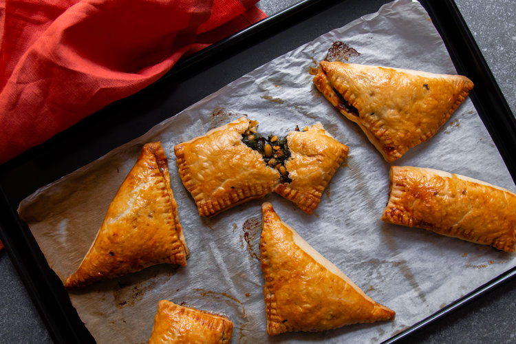
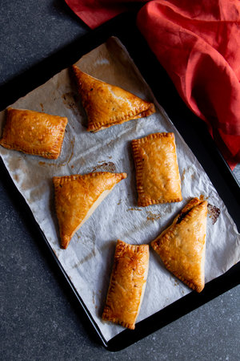
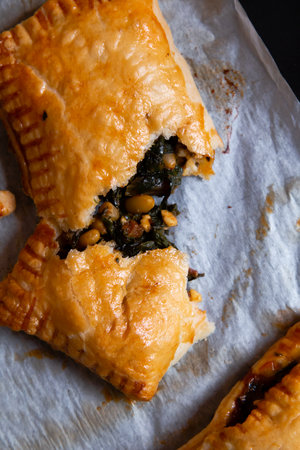

BAKOULA, FETA AND PINE NUTS HAND PIES

We’ve had two to three good consecutive weeks of very nice weather and it finally feels like summer in London. I have to admit that some days were very briefly interrupted by a few hours of rain but nothing that lasted too long to bother us. I am so excited about this summer! We’ve planned a few trips and I am going to spend quite a lot of time in Morocco. I really miss those school days when my mom and I would spend two months in Morocco every year. By the end of the summer I was so sad to go back to Brussels, every single time! This year between travelling and work, I will be spending about three weeks in Rabat and Marrakech in July and August. I haven't spent that much time in Morocco in
the summertime for years, so it’s safe to say that I am beyond excited.

For those who already got their hands on Casablanca, you’ve probably noticed my quick chicken tagine hand pies on page 133. These little babies are the perfect handheld snack or tasty entrée for a Moroccan feast. They are packed with Moroccan flavours and so easy to make. When I was recipe developing for the book I really hesitated between the chicken hand pies and a vegetarian version of them. The vegetarian version contained bakoula and lots of other tasty things (recipe is below) but since I already had a recipe for Romano peppers stuffed with bakoula in the book I preferred to go with the chicken ones. And today is the day I finally get to share it with you! Bakoula is a Moroccan salad originally made with mallow but I also love to make it with Swiss chard, and with feta and pine nuts bakoula just keeps getting better!

INGREDIENTS
- 2 tablespoons olive oil
- 400g Swiss chard, stalks removed, leaves cut into strips 3cm wide
- 2 tablespoons finely chopped flat leaf parsley
- 1 tablespoons finely chopped fresh coriander
- 1 tablespoons lemon juice
- 2 garlic cloves, peeled and crushed
- 1 teaspoons paprika
- ½ teaspoon ground cumin
- ¼ teaspoon salt, or more to taste
- 60g feta, crumbled
- 2 tablespoons pine nuts
- 320g ready-rolled shortcrust pastry sheets
- 1 egg, beaten to brush the pastry
METHOD
- Preheat the oven to 220°C (200°C fan).
- To make the bakoula salad, heat the olive oil in a large saucepan over a medium-low heat. Add the Swiss chard and then stir in the remaining ingredients, except the feta and pine nuts. Cover the pan and cook for about 8 to 10 minutes until the chard is soft. Uncover the pan and cook for a further 5 minutes or until all the liquid has evaporated, stirring occasionally. Taste and adjust the seasoning, adding more salt if necessary. Remove the pan from the heat and stir in the feta and pine nuts. leave the filling to cool to room temperature, when you can start assembling the hand pies. Alternatively, transfer the filling to a bowl, cover with clingfilm and refrigerate until ready to use; it will keep for up to 2 days.
- Unroll your pastry sheets on to a work surface and cut each sheet into squares or rectangles. Spoon about 4 tablespoons of the filling in the centre of each square/rectangle. Fold one corner over the filling to meet the opposite corner to form a triangle or a rectangle, then seal the edges by pressing down with the tines of a fork.
- Place the turnovers on the lined baking tray, leaving about 2cm between them. Brush their tops with the beaten egg and bake for about 20 to 25 minutes until golden brown. Serve warm or at room temperature